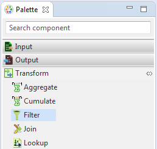
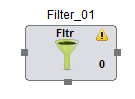

Filter
Filter component as the name suggests selects specific records from the input based on a filter condition. Filter is present under the Transform category in the component palette. It contains only one input,one output port and one unused port. All the records that satisfy the filter condition are available at the output port. Those records that do not satisfy the condition are transmitted through the unused port.
User is provided with options to create Java class or specify expressions. Java class includes the specified filter condition which is then applied on the input records. Optionally, user can also use the pre-defined standard Operation Classes, more details are provided in the Operation Class section Operation Class User can manually create Expressions or use the Predefined Expressions provided in the Expression Editor. Based on the expression provided the records are filtered by the Filter component.
The Filter component can be easily distinguished in the component palette.

An enlarged version of the same is depicted when dragged on the canvas.

For further reference click on the links below: